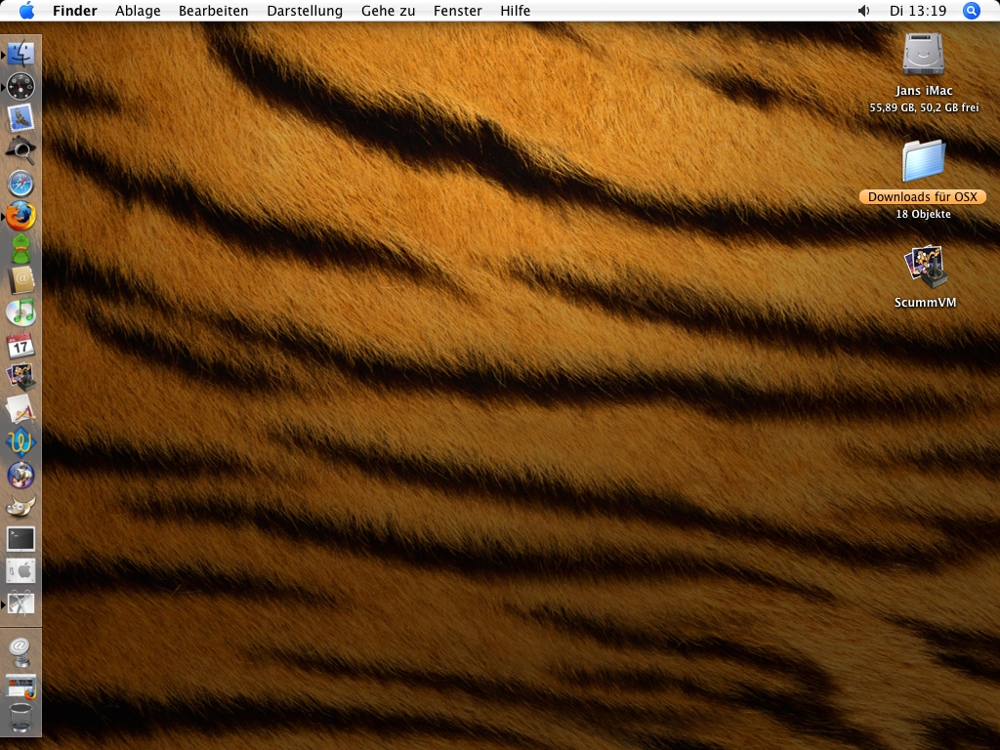
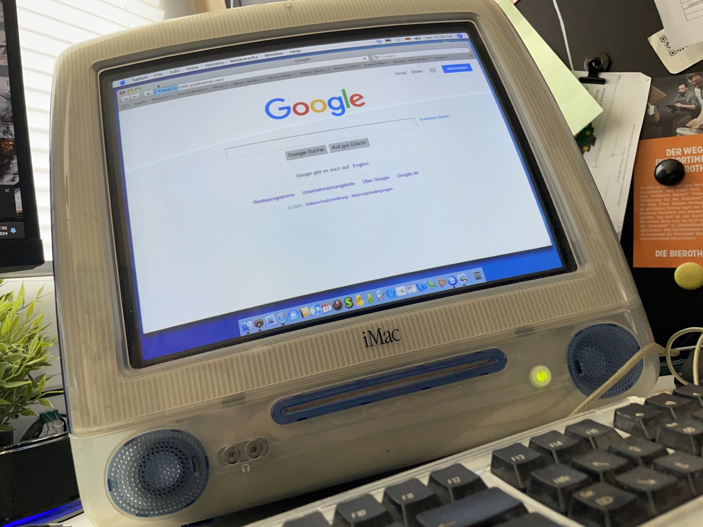

iMac G3
CURRENT SPECS //
- Model
- PowerMac2,2
- CPU
- 350 MHz PowerPC 750 (G3)
- RAM
- 512 MB PC100 SDRAM
- GPU
- ATI Rage 128 Pro (AGP 2x), 8 MB VRAM
- OS
- Mac OS X 10.4.11 + Classic
- HDD
- 60 GB
- Colour
- Indigo
ORIGINAL //
Hinweis: Diese Seite entstand ursprünglich am 18.01.2006.
Seit kurzem nenne ich einen iMac G3 (Version vom Sommer 2000) mein Eigen. Nach diversen Schwierigkeiten mit Mac OS 9 entschloss ich mich, auf Mac OS X 10.4 ("Tiger") upzudaten. Vorher ist es wichtig, auf iMac Firmware 4.1.9 zu aktualisieren, da Mac OS X ansonsten die Installation verweigert.
Nachträglich habe ich folgende Modifikationen vorgenommen:
- 7G-HDD (Samsung, 5400rpm) gegen eine 60G-HDD (Samsung, 7200rpm) ausgetauscht
- einen zweiten 128MB-SDRAM-Riegel einsetzen

Es besteht leider keine Chance, das eingebaute Slot-In-CD-ROM gegen einen CD- oder DVD-Brenner auszutauschen, es sei denn, es wird ein extra für den iMac gefertigtes Teil besorgt, welches sehr teuer ist. Die übrigen Einbauten waren kein Problem, existieren doch im Internet sehr gute Beschreibungen.
Zurück zur Installation: Mac OS X 10.4 sollte unbedingt mit der X11-Erweiterung installiert werden, damit einige beliebte OpenSource-Programme unter OS X laufen. Weiterhin besteht die Möglichkeit, OS X über Mac OS 9 zu installieren, damit letzteres im Classic-Mode gestartet werden kann. Dies ist für ältere Programme sinnvoll, vor allem, wenn kein Geld für Updatelizenzen ausgegeben werden soll (wie es bei meinem Photoshop 6 der Fall ist ;-)).
Derzeit zusätzlich installierte Software auf dem iMac:
- NeoOffice 1.2 (Beta) (OpenOffice in der Aqua-Umgebung)
- Adium (Instant Messenger wie GAIM oder Trillian)
- Mozilla Firefox 1.5
- TextWrangler (leistungsstarker Editor)
- GIMP (unter X11)
- ScummVM (CVS vom 30.12.2005; für LucasArts-Adventures gedacht)
- DOSBox 0.63 (welches endlich läuft)
Folgende Aufgaben stehen für diesen Mac noch aus:
- EPSON Perfection 1240U (Scanner) via USB installieren. Evtl. könnten vorherige Versuche daran gescheitert sein, dass der andere USB-Port an der Seite defekt ist. Auch mein Bluetooth-USB-Dongle von MSI versagte da seinen Dienst.
- DOSBox für den Zugriff auf CD-ROM konfigurieren. Da ich ein Mac/UNIX-Newbie bin, brauche ich noch etwas Zeit zum tüfteln...
- FINK installieren, um Linux-Packages verwenden zu können.
- Vielleicht einen Webserver mit PHP und MySQL für Testzwecke aufsetzen.
UPDATE //
Der iMac läuft noch. Und er ist im Keller. Dazu sehr schwer und sehr sperrig. Ich habe keinen Schreibtisch, der Platz für ihn hätte, daher wird er vermutlich noch die nächste Zeit im Keller verbringen. An der Config hat sich nichts verändert. Was bedeutet, dass dieser Rechner im Netz derzeit quasi unbrauchbar ist. Ein Glück habe ich mittlerweile ein iBook G4 ...
Den Scanner habe ich längst nicht mehr. Mit Linux bin ich nie richtig warm geworden. Und Adium ist weniger funktional und mehr ein Nachruf auf das alte Web.
Apps sind auch "neue" drauf, etwa Microsoft office:mac, Internet Explorer 5.1, Dropbox und Duke Nukem 3D. Come get some.
Wirklich bemerkenswert nach all der Zeit ist, wie gut Mac OS X "Tiger" auf einem CRT-Monitor wirkt. Displayseitig war Apple immer gut aufgestellt, und das GUI war damals seiner Zeit voraus -- auch wenn die Vergleiche mit Windows XP aus meiner Sicht eh immer etwas gehinkt haben. Sei's drum. Eine schöne Maschine, heute noch, wenn auch langsam.